UX Design
Talent Program
Improving the job search experience so students can find their dream career.
My Role
- UX Designer
Timeline
- Feb. 2019 - Apr. 2019
Team
- Copy Writer, Engineer, Product Manager
Responsibilities
- User Research, UX/UI, Interaction Design

Background
Working with my teammate, Ana Cintora, we created this landing page that helps students find jobs easier.
Students that are interested in being apart of the Talent Program network opt-in from the online classroom. Employers will then have access to their information, portfolio, and resume. If an employer is interested in a candidate, they will reach out to the student.
Problem
Students are frustrated that they don't know how long they will have to wait for employers to reach out to them. They have expressed interest in wanting to be more active in their job search. The teams solution was to create a webpage that linked out to Udacity's partners job boards.
Research
I studied common job boards such as LinkedIn and Glassdoor to see how they arranged their information. Some common themes included the ability to sort and filter by location, position, date posted, and salary.
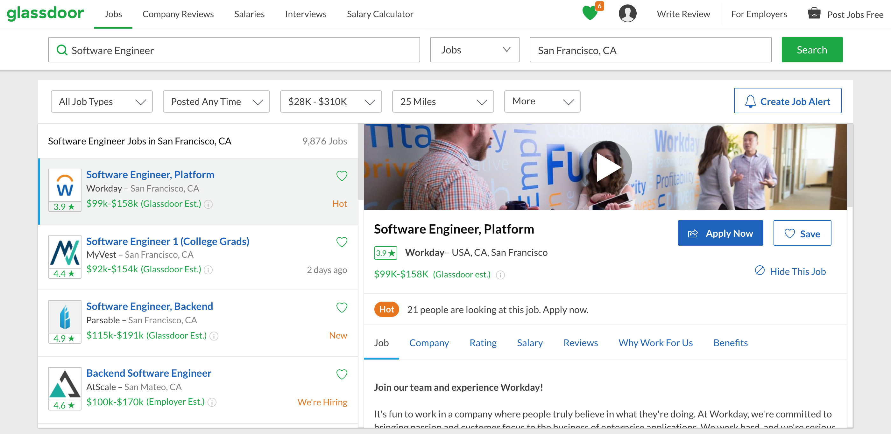 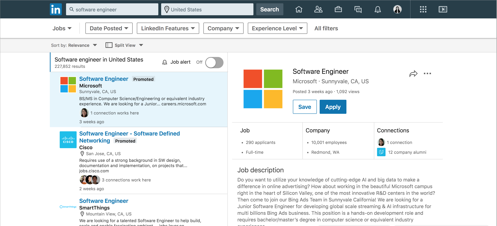User Flows
There are two sides to the flow: employers who are interested in hiring Udacity students and Udacity students/alumni.
Employer flow: Companies are either contacted by Udacity directly and asked if they want to be a partner or they find our program through the website. Employers then fill out a form and go through the approval process to ensure that it is a legitimate company. Once approved/accepted, they will have access to the student database and can begin reaching out to potential candidates.
Student flow: Students either join the program through the Udacity website or through the classroom. They are checked to make sure they are currently a student or an alumni. If they are approved, they are taken to the online classroom and asked to “opt-in” to the program.
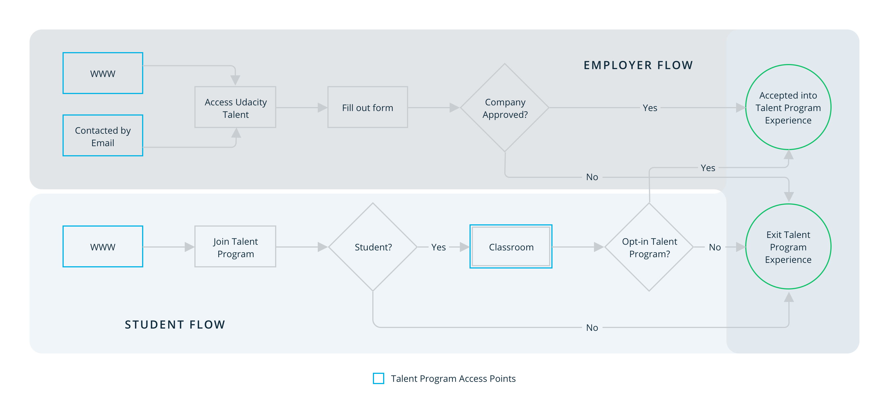 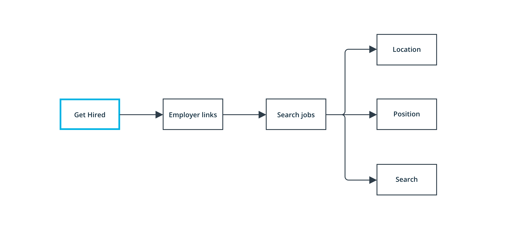Brainstorm
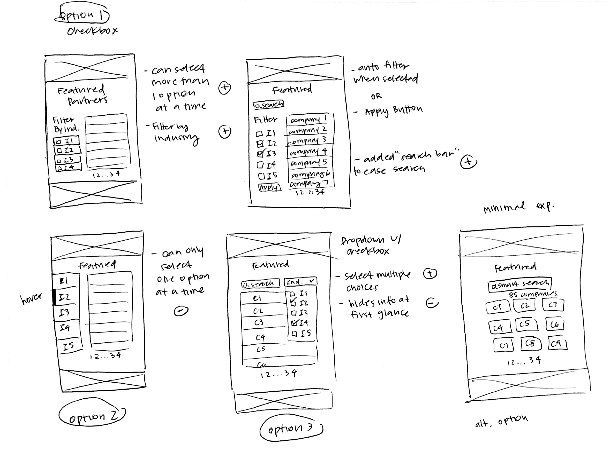
Constraints
I made sure to always have good communication between the developers and I, and we were able to figure out early on that an MVP would have to ship during the initial launch date due to time and engineering constraints. The developers needed more time to set up the database in order to populate the page with the job positions and filter. We would then implement the full experience within the next month.
The MVP would focus on addressing students immediate needs first — a place to access hiring partners. It was also faster to implement and could allow us to gather student feedback about the experience and use that to iterate for future designs.
Layout Explorations
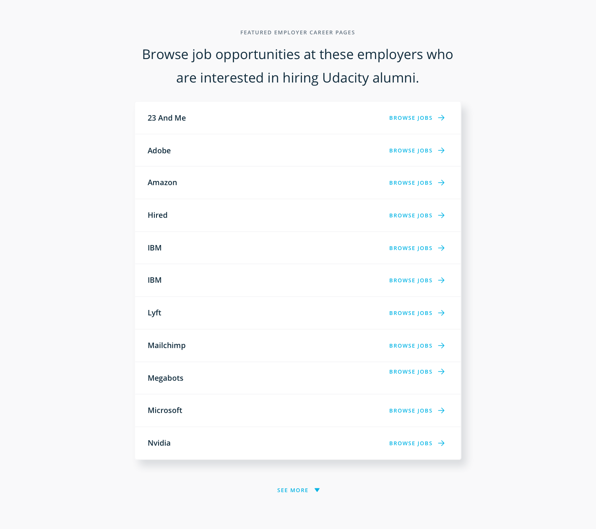 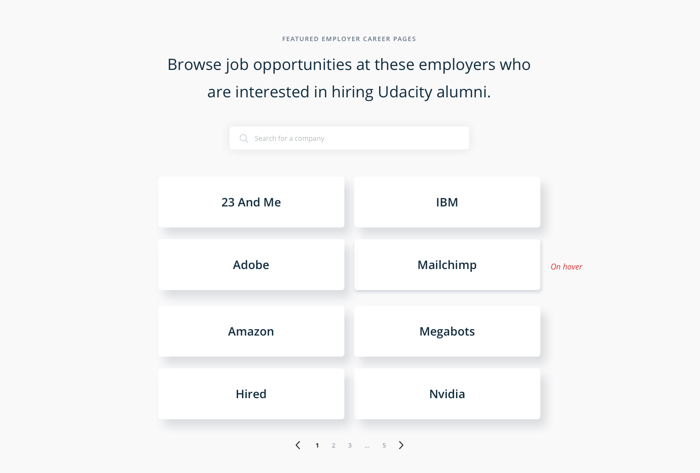I experimented with different layouts. For the MVP, it made sense to do a grid layout since there would be no company details. The row layout had too much white space.
Filter Explorations
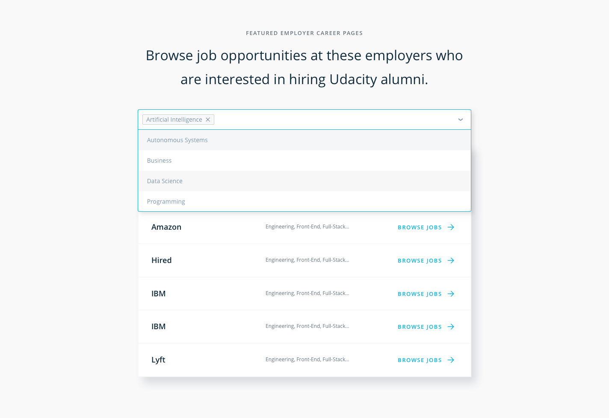 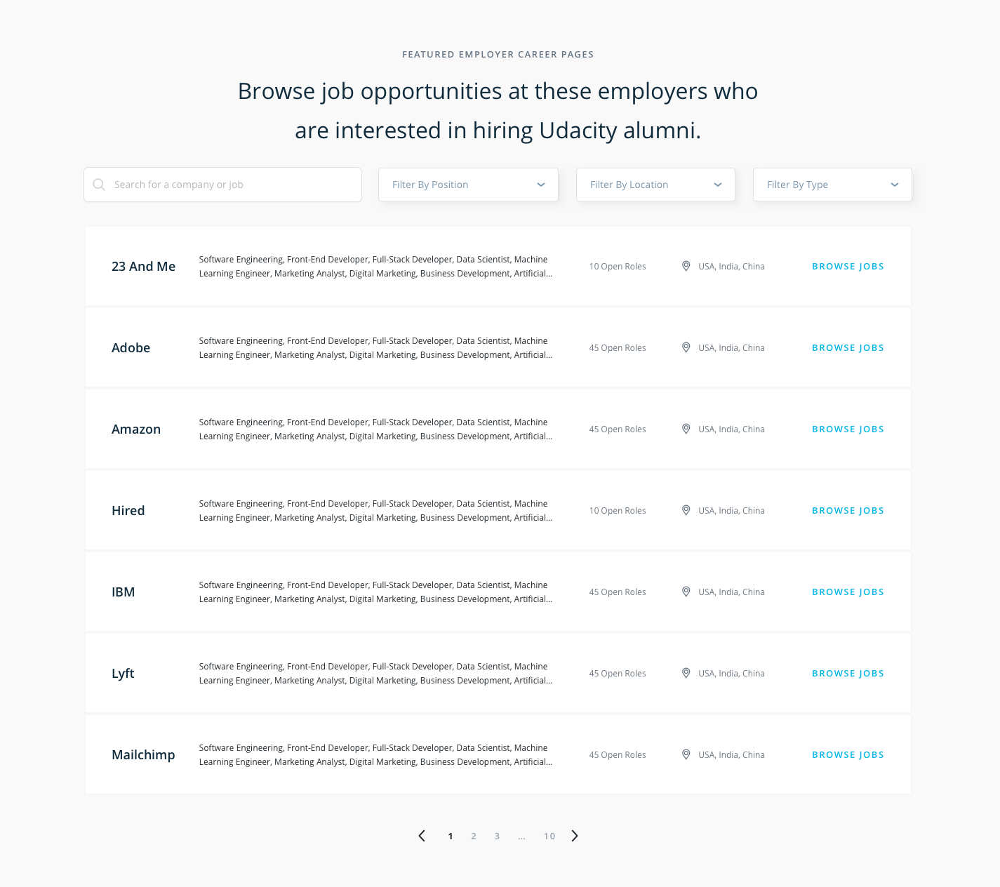 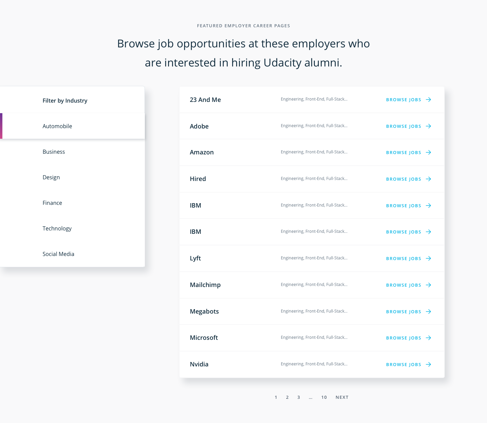I experimented with different filter dropdown styles. However, I realized that a dropdown would not be ideal since it hides information which isn't the best UX. I would also need to have a signifier that indicated the filter was on. The dropdown did provide a clean UI though.
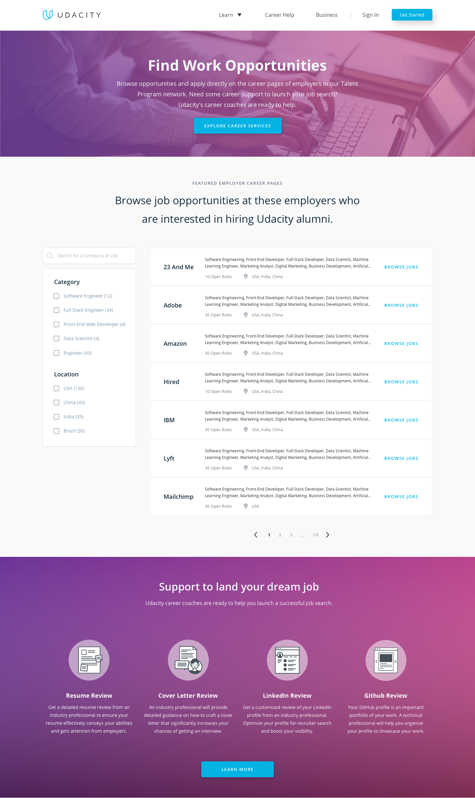I decided that a side bar with filters would be the best layout in desktop form. It provides a clean UI, doesn't hide any information, and is very intuitive.
Mobile Explorations
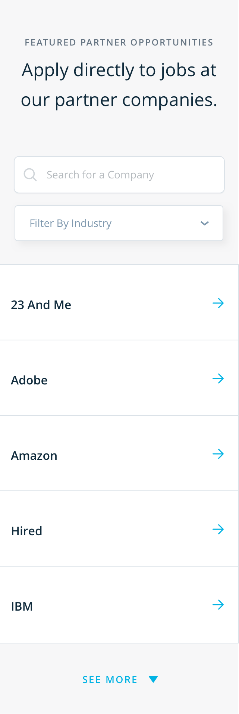 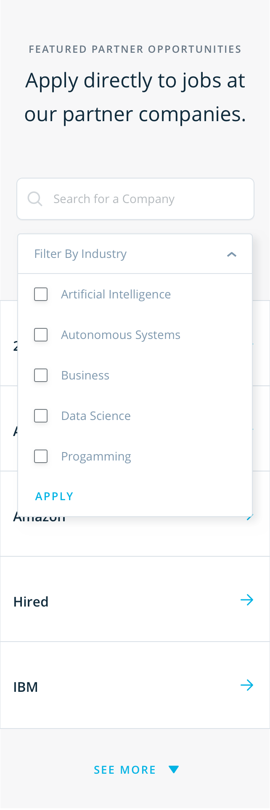 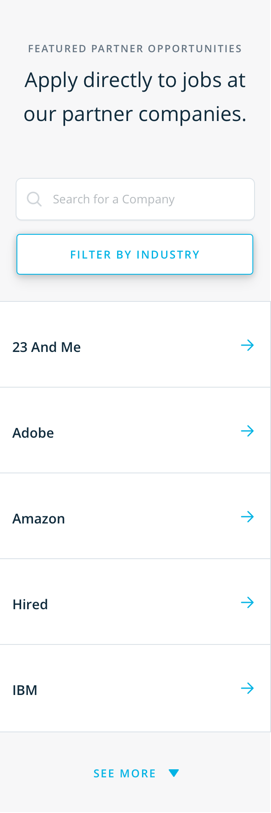Again, here a dropdown menu is not ideal because it hides information from the user. However, since this is the mobile layout, it may be inevitable that some information must be hidden in order to keep a clean UI.
Prototype
Next Steps
After the full experience is launched, I would like to conduct user testing and interview students about their experience with a more active job search experience. From there, I can use those findings to further iterate on the page to ensure that Udacity keeps the student experience as a priority.